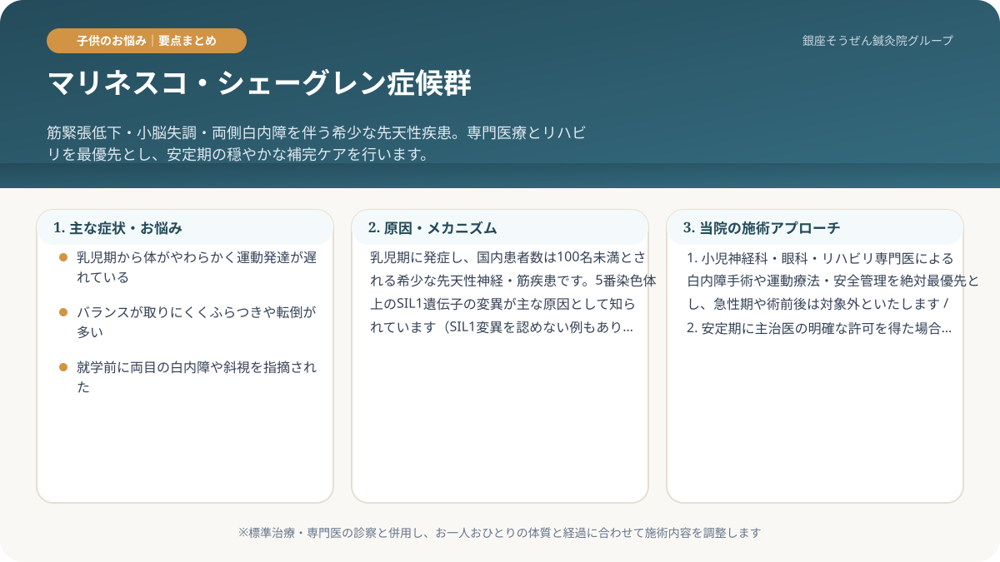

マリネスコ・シェーグレン症候群の鍼灸
筋緊張低下・小脳失調・両側白内障を伴う希少な先天性疾患。専門医療とリハビリを最優先とし、安定期の穏やかな補完ケアを行います。
まず知っておきたい要点と改善の流れ

乳児期に発症し、国内患者数は100名未満とされる希少な先天性神経・筋疾患です。5番染色体上のSIL1遺伝子の変異が主な原因として知られています（SIL1変異を認めない例もあります）。筋緊張低下や筋力低下、小脳失調による歩行・バランスの不安定さ、知的障害に加え、就学前に急速に進行する両側白内障、低身長、骨格変形などを伴うため、早期の白内障手術や継続的なリハビリテーション・転倒予防が不可欠です。
このようなお悩みはありませんか？
- ✓乳児期から体がやわらかく運動発達が遅れている
- ✓バランスが取りにくくふらつきや転倒が多い
- ✓就学前に両目の白内障や斜視を指摘された
- ✓筋力低下や骨格の変形、日常の疲れやすさがある
当院の施術アプローチ・改善の流れ
なぜ鍼灸で改善へ向かうのか？（作用機序の図解）
マリネスコ・シェーグレン症候群に対する鍼灸は、「刺さない小児はり」による皮膚感覚〜自律神経の鎮静機序を通じて、お体本来の回復力を引き出します。

刺さない専用の「小児はり（てい鍼）」で、背中や手足の皮膚をリズミカルに優しく撫でます。
皮膚への穏やかな触覚刺激が脳へ伝わり、安心ホルモン（オキシトシン等）と副交感神経を促します。
興奮しやすい子どもの神経バランスを落ち着かせ、夜泣き・おねしょ・起立不調の土台を整えます。
保護者の方と寄り添いながら、お子さまの体調と成長ペースに合わせた無理のないケアを続けます。
院長YouTube解説・関連動画
発症に気がつくきっかけになりやすい症状は、発育や発達の遅れ
マリネスコ・シェーグレン症候群の症状は、発育や発達の遅れ、体のバランスが上手にとれない、筋肉の力が弱い、知能の低下、白内障などです。身長が低い、背骨や手足の骨の形が変わる、斜視や性腺機能の低下が現れることもあります。
発症に気がつくきっかけになりやすい症状は、発育や発達の遅れです。乳幼児期に身体がやわらかいことや首が座ったりお座りしたりする時期が遅れること、言葉の発達が遅いことなどの発達の遅れが現れ、発症に気がつくことが多いのです。
突然学齢期の前に両側に白内障が現れて症状が急速に進みます。基本的には他の症状が進むスピードは遅く、あまり変化のない状態で成人まで成長することもあります。
マリネスコ・シェーグレン症候群の改善方法は手術やリハビリテーションです。
マリネスコ・シェーグレン症候群では、白内障の症状は急速に進むためそのまま放っておくと視力障害が進んでしまいます。そのため、白内障に対しては発症したらなるべく早く手術をして改善を行う必要があるのです。
発育や発達の遅れに対しては、リハビリテーションで改善を行います。マリネスコ・シェーグレン症候群は発育や発達の遅れによって日常生活に支障があることも多いため、生活を送りやすくするために特殊学級での教育も行います。
マリネスコ・シェーグレン症候群は、学齢期の前に白内障を発症し急速に症状が進みます。そのため、大事なことは白内障を早く発見し、適切に改善を行うことです。
日常生活を送る上で注意することは、転倒などの事故です。現れる症状に身体のバランスの悪さや筋力の弱さがあるため、転倒には注意しましょう。
平衡障害・ふらつき・小脳系トラブルの全身ツボ図解
実際の施術ではお一人おひとりの体質・症状に合わせて選穴しますが、脊髄小脳変性症・歩行平衡障害などのバランス・下肢支持サポートの臨床でよく用いられる代表的なツボの目安です。

📌 代表的なツボの詳細一覧表を開く（6穴） ▼
| ツボ名 | 位置の目安 | 主な狙い | セルフケアの注意点 |
|---|---|---|---|
| 百会（ひゃくえ） | 頭頂部の中央 | 体幹の軸感覚・自律神経の安定化 | 座位で転倒に注意しながら優しく触れます。 |
| 完骨（かんこつ） | 耳の後ろにある出っ張った骨（乳様突起）の下後ろ | 平衡感覚・後頭部深層筋の緊張緩和 | 親指で優しく支える程度に押します。 |
| 風池（ふうち） | 後頭部生え際のくぼみ | 椎骨脳底動脈周囲の筋緊張緩和・ふらつきケア | 首を大きく反らさず穏やかに刺激します。 |
| 足三里（あしさんり） | 膝のお皿の下外側から指4本分下 | 下肢の筋疲労回復・歩行リハビリの土台づくり | 温灸や穏やかな指圧で下肢の循環を促します。 |
| 懸鐘（けんしょう） | 外くるぶしの上から指4本分上 | 足首の安定性・下肢の重だるさ軽減 | 無理な立位を避け座位でケアします。 |
| 太衝（たいしょう） | 足の甲、親指と人差し指の骨の間 | 足底接地感の意識づけ・自律神経の鎮静 | お風呂上がりなどに優しくさすります。 |
国際査読論文の科学的エビデンス
国際的な医学データベース（PubMed・Cochrane等）で報告されている脊髄小脳変性症・歩行平衡障害などのバランス・下肢支持サポート領域の代表的な査読済み鍼灸研究をまとめています（標準治療との併用や研究上の限界を含めて正確に掲載）。
📚 査読論文データ・PubMed出典リンクを開く（4件） ▼
| 年・研究デザイン | 対象・規模 | 主な結果 | 限界・出典 |
|---|---|---|---|
| 2022年 メタ解析 | 小児夜尿症 13試験（n=890） | 非侵襲レーザー鍼（p=0.001）・灸（p=0.004）で改善児が有意増加。デスモプレシンとは完全治癒率差なし（p=0.57）。 | GRADE確実性は非常に低い。標準治療の補完ケア。 Explore (PMID: 34893441) |
| 2025年 メタ解析 | 小児喘息 16 RCTs（n=1,675・標準治療併用） | 鍼灸併用でFEV1pred%（MD 6.02, p=0.0128）・PEF（p=0.0019）が改善、IgE・IL-4・好酸球も有意低下。 | QOL（PAQLQ）は有意差なし、バイアス懸念あり。吸入薬継続必須。 Front Med (PMID: 40740962) |
| 2024年 メタ解析（TSA付） | 小児アレルギー性鼻炎 13 RCTs（n=1,186） | 鍼＋薬物併用は薬物単独より有効性優位（RR 1.29, p<0.00001）、再発率も低下（RR 0.40）。 | 鍼単独は薬物と差なし（p=0.13）。全体的な質は低い。 Int Forum Allergy Rhinol (PMID: 39017391) |
| 2016年 メタ解析 | 小児扁桃摘出術後嘔吐（PONV）8研究 | 内関（PC6）鍼刺激群で術後の悪心・嘔吐発生が有意に減少（RR 0.77, p<0.05）。 | 観察研究含む。急性嘔吐・脱水時は小児科受診最優先。 Laryngoscope (PMID: 26864736) |
参考文献・出典
- 2022年 メタ解析（小児夜尿症 13試験（n=890））— Explore (PMID: 34893441)
- 2025年 メタ解析（小児喘息 16 RCTs（n=1,675・標準治療併用））— Front Med (PMID: 40740962)
- 2024年 メタ解析（TSA付）（小児アレルギー性鼻炎 13 RCTs（n=1,186））— Int Forum Allergy Rhinol (PMID: 39017391)
- 2016年 メタ解析（小児扁桃摘出術後嘔吐（PONV）8研究）— Laryngoscope (PMID: 26864736)
よくある質問（FAQ）
Q. 白内障や歩行のふらつきは鍼灸で治りますか？▼
Q. どのような目的で相談する方がいますか？▼
あわせて読まれる関連疾患（子供のお悩み）
1番染色体短腕末端の欠失により発達遅滞や筋緊張低下、てんかん等を生じる染色体異常症。専門医の対症療法・長期管理を最優先に、安定期の穏やかな補完ケアとご家族支援を行います。
乳児期の筋緊張低下や過食・低身長等を伴う先天性疾患。専門医療と栄養管理を最優先とし、安定期の穏やかな補完ケアを行います。
ASPA遺伝子変異による進行性の希少神経疾患。専門医療による栄養・誤嚥予防を最優先とし、安定期の穏やかな補完ケアとご家族支援を行います。
16歳未満で発症する原因不明の慢性関節炎（JIA）。専門医の薬物治療と眼科定期検査を最優先に寛解期の体調を支えます。
X染色体FMR1遺伝子異常により知的障害や自閉症様行動、睡眠障害などを呈する指定難病。専門医療と療育を軸に穏やかに支えます。
TSC1/TSC2遺伝子異常により脳・皮膚・腎・肺など全身に病変を生じる指定難病。専門医の全身管理が最優先です。
CLINICAL RECOVERY CASES
✨ 実際の臨床改善事例・回復経過を見る
銀座本院をはじめ各院での実際の改善事例を症状別に絞り込んでご確認いただけます。
おひとりで悩まず、まずはご相談ください
銀座本院・川口・大宮・横浜・博多・田無の各院でご予約を承っております。